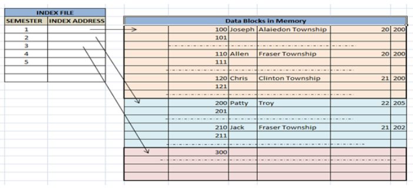

Indexing is a way to optimize performance of a database by minimizing the number of disk accesses required when a query is processed.
An index or database index is a data structure which is used to quickly locate and access the data in a database table.
Indexes are created using some database columns.
- The first column is the Search key that contains a copy of the primary key or candidate key of the table. These values are stored in sorted order so that the corresponding data can be accessed quickly (Note that the data may or may not be stored in sorted order).
- The second column is the Data Reference which contains a set of pointers holding the address of the disk block where that particular key value can be found.
{kind=link}
There are two kinds of indices:
- Ordered indices: Indices are based on a sorted ordering of the values.
- Hash indices: Indices are based on the values being distributed uniformly across a range of buckets. The buckets to which a value is assigned is determined by function called a hash function.
There is no comparison between both the techniques, it depends on the database application on which it is being applied.
- Access Types: e.g. value based search, range access, etc.
- Access Time: Time to find particular data element or set of elements.
- Insertion Time: Time taken to find the appropriate space and insert a new data time.
- Deletion Time: Time taken to find an item and delete it as well as update the index structure.
- Space Overhead: Additional space required by the index.
Indexing Methods
Ordered Indices
The indices are usually sorted so that the searching is faster. The indices which are sorted are known as ordered indices.
- If the search key of any index specifies same order as the sequential order of the file, it is known as primary index or clustering index.
Note: The search key of a primary index is usually the primary key, but it is not necessarily so. - If the search key of any index specifies an order different from the sequential order of the file, it is called the secondary index or non-clustering index.
Clustered Indexing
Clustering index is defined on an ordered data file. The data file is ordered on a non-key field. In some cases, the index is created on non-primary key columns which may not be unique for each record. In such cases, in order to identify the records faster, we will group two or more columns together to get the unique values and create index out of them. This method is known as clustering index. Basically, records with similar characteristics are grouped together and indexes are created for these groups.
For example, students studying in each semester are grouped together. i.e. 1st Semester students, 2nd semester students, 3rd semester students etc are grouped.

Clustered index sorted according to first name (Search key)
{kind=link}
Primary Index
In this case, the data is sorted according to the search key. It induces sequential file organisation.
In this case, the primary key of the database table is used to create the index. As primary keys are unique and are stored in sorted manner, the performance of searching operation is quite efficient. The primary index is classified into two types : Dense Index and Sparse Index.
(I) Dense Index :
- For every search key value in the data file, there is an index record.
- This record contains the search key and also a reference to the first data record with that search key value.
{kind=link}
(II) Sparse Index :
- The index record appears only for a few items in the data file. Each item points to a block as shown.
- To locate a record, we find the index record with the largest search key value less than or equal to the search key value we are looking for.
- We start at that record pointed to by the index record, and proceed along the pointers in the file (that is, sequentially) until we find the desired record.
{kind=link}
Non-Clustered Indexing
A non clustered index just tells us where the data lies, i.e. it gives us a list of virtual pointers or references to the location where the data is actually stored. Data is not physically stored in the order of the index. Instead , data is present in leaf nodes. For eg. the contents page of a book. Each entry gives us the page number or location of the information stored. The actual data here(information on each page of book) is not organised but we have an ordered reference(contents page) to where the data points actually lie.
{kind=link}
It requires more time as compared to clustered index because some amount of extra work is done in order to extract the data by further following the pointer. In case of clustered index, data is directly present in front of the index.
Secondary Index
It is used to optimize query processing and access records in a database with some information other than the usual search key (primary key). In this two levels of indexing are used in order to reduce the mapping size of the first level and in general. Initially, for the first level, a large range of numbers is selected so that the mapping size is small. Further, each range is divided into further sub ranges.
In order for quick memory access, first level is stored in the primary memory. Actual physical location of the data is determined by the second mapping level.
{kind=link}